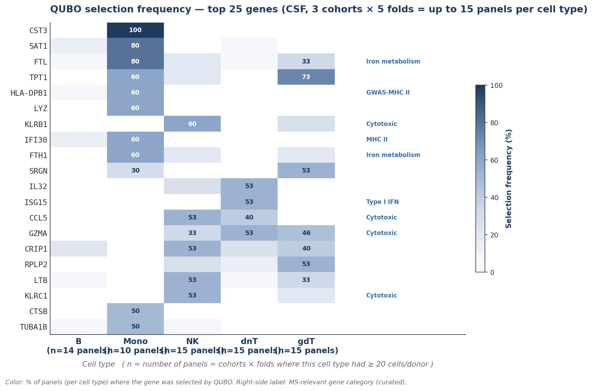
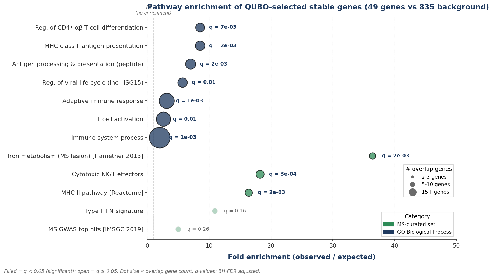

| Cohort | HD | MS | 計 |
|---|---|---|---|
| Heming | 9 | 9 | 18 |
| Pappalardo | 6 | 5 | 11 |
| Ramesh | 3 | 14 | 17 |
| Touil* | 4 | 0 | 4 |
| 計 | 22 | 28 | 50 |
* Touil cohort は MS donor 含まず → train 専用に固定。3 cohort × LOOCV で外部 cohort 評価。 CSF 226k cells / PBMC 159k cells / 32,170 genes (RNA assay)。
| Method | Selection logic | Mechanism | Characteristic |
|---|---|---|---|
| DE_top | edgeR |t| 上位 K | Univariate ranking | 最もシンプル |
| HVG | train donor 間の 発現分散 上位 K | Unsupervised | label 不使用 |
| LASSO | L1 正則化 (λ で K 個 nonzero に調整) | 係数 0 化 | Sparse |
| Elastic Net | L1 + L2 ハイブリッド (l1_ratio = 0.5) | top-K |coef| | 共線性に強い |
| QUBO 提案 | 二次最適化 (relevance × non-redundancy × cardinality 同時) | Simulated Annealing | 冗長性を明示制御 |
全 5 手法で 同じ候補プール (top-100 by |t|)、同じ K-grid、同じ L2 logistic 分類器、同じ 8 cell-type soft-voting ensemble を使用。 違いは選択ロジックのみ → 公正な比較。評価: 3 cohort × LOOCV。詳細パイプライン → 補助スライド S2。
| Method | AUC | AP | F1 | MCC | σ_AUC |
|---|---|---|---|---|---|
| QUBO 提案 | 0.788 ★ | 0.846 | 0.635 ★ | 0.258 ★ | 0.044 |
| LASSO | 0.779 | 0.856 | 0.610 | 0.206 | 0.068 |
| Elastic Net | 0.779 | 0.870 ★ | 0.588 | 0.216 | 0.041 ★ |
| DE_top | 0.742 | 0.817 | 0.578 | 0.100 | 0.065 |
| HVG | 0.712 | 0.797 | 0.574 | 0.135 | 0.048 |
★ = 1 位。QUBO は 主要 3 分類指標 (AUC, F1, MCC) で 1 位、σ_AUC は EN と Δ 0.003 で互角。 QUBO per-cohort: Pappalardo 0.807, Heming 0.738, Ramesh 0.819 (0.74-0.82 タイト範囲)。詳細 → S3。

★ Mono: CST3, FTL, HLA-DPB1, IFI30, FTH1, CD74 = MHC II + iron metabolism (MS monocyte 病態の中核)。

Iron metab. FE 36× [Hametner 2013], cytotoxic 18×, MHC II 16×。 全 448 で MHC II 10/10, MS GWAS 9/11 hit。